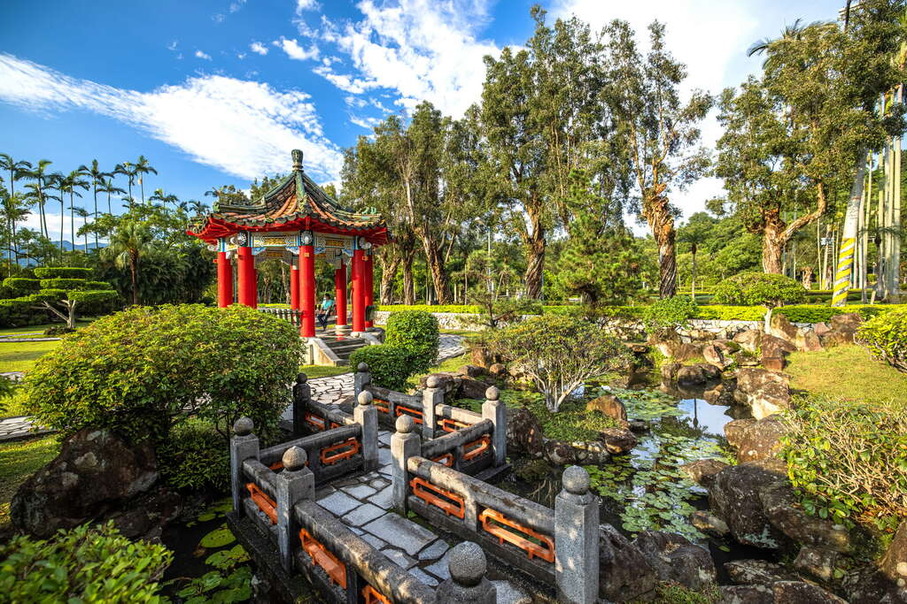

<header>
<h1>熱門景點</h1>
<nav>
    <ul>
        <li><a href="index.html">士林官邸</a></li>
        <li><a href="Beitou.html">北投圖書館</a></li>
        <li><a href="Maokong.html">貓空纜車</a></li>
    </ul>
</nav>
</header>
<article>
    <section>
        <h3>景點介紹</h3>
        <p>士林官邸有精緻的庭院造景設計，蟲鳴鳥叫、景色秀麗，是休閒遊憨的絕佳場所。</p>
        
        <audio controls>
            <source src="audio/士林官邸.mp3" type="audio/npeg"/>
            瀏覽器不支援  
         </audio>
    </section>
</article>
<aside>
    <h3>美食介紹</h3>
    <ul>
        <li><a href="https://www.travel.taipei/zh-tw/shop/details/95">牛易館</a></li>
        <li><a href="https://www.travel.taipei/zh-tw/shop/details/4487">阿寶師咖哩餃</a></li>
    </ul>
</aside>
<footer>
    <h4>&copy; 2020 - This is the footer of the websute.</h4>
</footer>